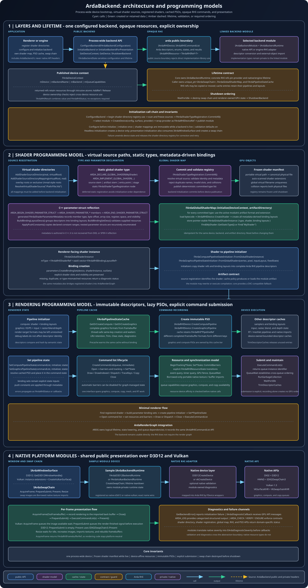

Abstraction, identity, and lifetime
Architecture
ArdaBackend separates process policy, authored rendering systems, a backend-neutral RHI, private wrappers, and native APIs. The architecture is designed around explicit ownership, stable object identity, inspectable failure, and contained platform dependencies.
Learning objectives
After this chapter, you should be able to:
- derive the need for a narrow RHI boundary from dependency and portability constraints;
- distinguish public backend policy, public RHI contracts, private wrappers, and native API code;
- trace ownership from process state through devices, caches, command lists, and resources;
- explain intrusive references and why a device reference pins its concrete backend lifetime;
- enforce same-device operations and interpret
WrongDeviceas an architectural diagnostic; - choose the correct failure channel and thread-safety domain for an operation; and
- use native interop as an audited boundary rather than an abstraction escape hatch.
Prerequisites
Complete Getting started first. Review the glossary entries for intrusive reference counting, device affinity, synchronization, descriptor, and resource.
This chapter discusses architecture before method-level use. Follow it with RHI resources and Commands for concrete object creation and execution.
Fundamentals: what an abstraction must preserve
A graphics abstraction cannot simply hide native types. It must preserve the semantics that make GPU work correct:
- which device created an object;
- who retains and eventually destroys it;
- which states and usages were declared;
- which queue executes a command and which synchronization makes data visible;
- which capabilities are optional; and
- how invalid input, unsupported behavior, and native failure are distinguished.
Why an opaque RHI
ArdaBackend returns interfaces such as IArdaRHIDevice and IArdaRHIResource, not private wrapper classes or NVRHI handles. “Opaque” means callers can use the declared behavior without knowing the representation.
This gives the project a source boundary: renderer translation units need neither D3D12/Vulkan headers nor the private implementation library's types. Backend changes stay local as long as the public semantics remain stable.
Cost of opacity
Opacity introduces interface calls, conversion code, wrapper objects, and the need to model features explicitly. It can also delay access to new native extensions. Those costs are accepted to reduce dependency spread and make lifetime, errors, tests, and cross-backend behavior project-owned contracts.
Public, private, and native layers

- Application policy
- Selects startup mode, backend preference, validation profile, logging, lifecycle owner, and shutdown policy.
- Public backend layer —
arda::backend - Owns process configuration and context, shader registration and global maps, pipeline-state cache, and presentation interfaces.
- Public RHI layer —
arda::rhi - Defines descriptors, capabilities, result types, resource interfaces, command lists, and the device creation/submission surface.
- Private wrapper layer
- Converts Arda descriptors and calls to implementation-library/native representations, wraps returned objects, and carries device identity.
- Native backend layer
- Owns D3D12 or Vulkan instance/factory, adapter or physical device, queues, surface/swap chain, and private integration state.

Boundary rule
A public header may describe a native handle only through a neutral carrier such as FArdaNativeObject or an integer import field. It must not require callers to include private NVRHI, DXGI, D3D12, or Vulkan types.
Object ownership graph

- Diagnostic callback
- Caller-owned raw pointer stored by configuration. It must outlive backend use and is not deleted by ArdaBackend.
- Process backend state
- Owns the selected configuration, published context, private backend device, current error, default callback, mutex, and initialized flag.
- Device context
- Contains an intrusive device reference, selected backend, and queue capabilities. The context is process storage; copies of its device reference are independent owners.
- Swap chain
- Returned as
eastl::unique_ptr<IArdaSwapChain>and exclusively owned by the caller. It must be destroyed before backend shutdown. - Shader map and pipeline cache
- Caller-owned systems bound to a device. Their entries retain shaders, layouts, pipelines, and related objects.
- RHI objects
- Intrusively retained resources and command objects. Descriptors containing RHI refs may extend resource lifetime.
- GPU timeline
- Not a C++ owner, but submitted work imposes an effective lifetime requirement until execution completes.
Intrusive references and backend pinning
TArdaRHIRef<T> stores one pointer. Construction and copying call the object's AddRef(); destruction and reset call Release(); moves transfer the pointer without adding a reference. The count lives in the concrete object rather than a separate shared-pointer control block.
Why intrusive ownership fits the RHI
- Interfaces can return one lightweight owner type independent of concrete allocation.
- Resources can be shared by descriptors, caches, command state, renderer systems, and callers.
- There is no separate control-block allocation per object.
- A wrapper can coordinate destruction with private native representation.
Backend pinning
A resource cannot safely outlive everything required to destroy or call it. Concrete RHI device/resource wrappers therefore retain or otherwise anchor the implementation lifetime they need. A copied FArdaRHIDeviceRef can remain valid after ShutdownBackend() clears process ownership because the concrete device object still has an owner.
This behavior supports safe references, but relying on it as normal shutdown design leaves native destruction timing implicit. Production code should still destroy dependent systems and release copied references before process shutdown.
Reference concurrency
The reference wrapper contains no lock. Concurrent access to the same TArdaRHIRef variable requires external synchronization. Whether separate reference objects may concurrently call an implementation's AddRef/Release depends on the concrete reference-count implementation; do not infer whole-object thread safety from reference counting.
Process singleton state
The private FArdaBackendState is a function-local process singleton. It contains a mutex, configuration, context, default callback, private backend device, error text, and atomic initialized flag.
Why process-wide state exists
Shader directory freezing, global shader registration, selected artifact format, and a canonical device context all benefit from one authoritative lifecycle. A process facade also makes simple tools and applications easy to bootstrap.
Publication model
Initialization holds the lifecycle mutex while it validates registries and creates the backend. It writes context fields first, then stores the initialized flag with release ordering. IsBackendInitialized() performs an acquire load.
That atomic flag does not make every context accessor safe during concurrent mutation. References returned by GetDeviceContext() and GetQueueCapabilities() point into process storage. The public contract still requires lifecycle operations and device use not to race.
Tradeoff
A singleton simplifies one-device applications but constrains multi-adapter, multi-device, isolated test, hot-reload, and plugin scenarios. A future explicit backend-instance object would improve composition at the cost of passing context through more systems and redesigning global shader registration assumptions.
Device affinity as an invariant
Every created RHI object belongs to the device that created or imported it. This device affinity is part of object identity even when two devices use the same backend type.
Why backend equality is insufficient
Two D3D12 devices may have different descriptor heaps, queues, residency state, and native object ownership. Two Vulkan devices may use different physical devices, queue families, memory allocators, and dispatch tables. Therefore “both are Vulkan” does not make resources interchangeable.
Where affinity propagates
- A view belongs with its underlying resource and creating device.
- A binding set's resources and layout must be compatible with one device.
- A framebuffer's attachments must belong to its device.
- A pipeline cache is permanently associated with its constructor device.
- A global shader map is initialized against one device context.
- A command list may record only objects accepted by its device.
When this invariant is violated, APIs return EArdaRHIResult::WrongDevice before crossing into native calls where possible. Treat that result as evidence of an ownership-routing defect, not a transient GPU error.
arda::rhi::TArdaRHIResult<arda::rhi::FArdaRHIBindingSetRef> result =
device->CreateBindingSet(desc, layout);
if (!result &&
result.mStatus.mCode == arda::rhi::EArdaRHIResult::WrongDevice)
{
// Trace the resource, layout, and cache owners that supplied `desc`.
}Worked example: one backend, one ownership chain
This example follows one legal process-wide lifecycle from configuration to shutdown. It combines the contracts exercised by the backend and pipeline-cache tests: initialization publishes one device, copied device references remain owners, resources are device-affine, cache calls reject a mismatched requesting device, and shutdown clears singleton availability without forcibly clearing every copied reference.
Step 1: configure and publish one backend
The application chooses one backend and validation policy, then calls either headless initialization or presentation initialization. The presentation path shown here publishes the singleton context only after shader-registration gates, native device creation, and swap-chain creation all succeed.
using namespace arda;
backend::FArdaBackendConfiguration config;
config.mBackend = backend::DefaultBackend;
config.mbEnableValidation = true;
if (!backend::ConfigureBackend(config))
return ReportStartupFailure(backend::GetBackendError());
eastl::unique_ptr<backend::IArdaSwapChain> swapChain;
const backend::EArdaInitializeResult init =
backend::InitializeBackendForPresentation(
windowSurface, width, height, swapChain);
if (init != backend::EArdaInitializeResult::Success)
return ReportStartupFailure(backend::GetBackendError());
rhi::FArdaRHIDeviceRef device = backend::GetDevice(); // retained copy
{
rhi::FArdaRHIBufferDesc desc;
desc.mByteSize = 4096;
desc.mUsage = rhi::EArdaRHIBufferUsage::Structured;
desc.mStructureStride = sizeof(uint32_t);
desc.mDebugName = "WorkedExampleBuffer";
auto buffer = device->CreateBuffer(desc);
if (!buffer)
return ReportRhiFailure(buffer.mStatus);
backend::FArdaPipelineStateCache cache(device);
// Validation-path pseudocode: supplied only by a test fixture/double.
const rhi::IArdaRHIDevice* foreignDevice = testFixture.ForeignDevice();
const rhi::FArdaRHIStatus mismatch =
cache.PrecacheCompute(initializer, foreignDevice);
assert(mismatch.mCode == rhi::EArdaRHIResult::WrongDevice);
StopRenderingAndWaitForGpu();
swapChain.reset();
cache.Clear();
buffer.mValue = nullptr;
} // The swap chain, device-bound cache, and renderer resource are gone.
if (!runLifetimeConformanceExperiment)
{
// Normative production teardown: release ordinary caller ownership first.
device = nullptr;
backend::ShutdownBackend();
}
else
{
// Test-only alternative: prove retained ownership after singleton shutdown.
backend::ShutdownBackend();
assert(!backend::IsBackendInitialized());
assert(!backend::GetDevice());
assert(device);
rhi::FArdaRHISamplerDesc probeDesc;
auto probe = device->CreateSampler(probeDesc);
assert(probe);
probe.mValue = nullptr;
device = nullptr;
}The setup is faithful to the public contracts. ConfigureBackend precedes initialization; the presentation call returns a caller-owned swap chain; GetDevice() copies an intrusive device reference; and CreateBuffer returns a value plus FArdaRHIStatus. The helper names, runLifetimeConformanceExperiment, and testFixture.ForeignDevice() are intentionally pseudocode around those real calls.
Step 2: assign owners and affinity
Four different ownership facts now coexist:
- The process singleton's
FArdaDeviceContextretains one reference to the device. - The local
devicevariable retains another reference throughFArdaRHIDeviceRef. - The caller exclusively owns
swapChain; the process API does not destroy thatunique_ptrfor the caller. buffer.mValueretains the created resource, whose private implementation identity is associated with the creating device.
The pipeline cache also retains its constructor device and is permanently bound to it. This is device affinity: cache, resource, command list, layout, and framebuffer identity must agree when an operation combines them. Backend type equality is not enough.
Step 3: interpret WrongDevice
The cache's public PrecacheCompute overload accepts an optional requesting-device pointer specifically for ownership validation. Current tests pass a deliberately mismatched sentinel and assert EArdaRHIResult::WrongDevice. Pipeline-binding tests likewise combine a cache/command path with a framebuffer test object that does not report the expected owner and verify the same result.
The buffer follows the same architectural rule even though the short pseudocode exercises the cache's direct validation hook. Passing that buffer into a view, binding, command state, or other operation owned by a genuinely different RHI device/implementation must be rejected before an unsafe native call where the wrapper can validate provenance.
Step 4: reverse the ownership timeline
Normative production shutdown proceeds in reverse dependency order. The ordinary caller-held device and resources are released before the process singleton:
- Stop producers. Prevent frame, upload, and compilation tasks from creating more work.
- Complete GPU use. Wait until submitted work no longer needs the buffer or swap-chain images. CPU lifetime alone does not establish GPU completion.
- Release presentation and renderer state. Destroy the swap chain, clear device-bound caches/maps, and release renderer-owned resources.
- Release ordinary copied owners. Reset caller-held device and resource references once their dependent systems are gone. This is the production path documented in Getting started.
- Clear process availability. Call
ShutdownBackend(). It waits for the private backend to become idle, clears the context's device reference and queue capabilities, resets private process state, and marks the singleton uninitialized.
The conformance branch reverses only the last two actions on purpose: it keeps one copied FArdaRHIDeviceRef, shuts down the singleton, probes the retained device, and then releases the copy. That experiment demonstrates the actual lifetime guarantee without redefining recommended teardown order. Outside narrowly controlled lifetime tests or integrations with an explicit post-singleton ownership requirement, retaining or using ordinary renderer devices/resources after shutdown is non-normative.
Process availability versus retained lifetime
After shutdown, IsBackendInitialized() is false, GetDevice() is empty, and process queue capabilities are reset. Those observations describe the singleton facade. They do not mutate a copied intrusive reference held elsewhere.
The backend tests retain a shared device reference across ShutdownBackend(), verify that it still reports capabilities, and successfully create a sampler through it while the process singleton reports uninitialized. This is concrete evidence that process availability and object ownership are different state dimensions. The guarantee remains real: shutdown does not forcibly invalidate every copied intrusive reference. The production rule is equally clear: release ordinary caller device/resources before shutdown, and use the guarantee after shutdown only in a deliberately bounded conformance test or specialized integration.
Checkpoint
At the end of this sequence, can you identify (1) who owns the swap chain, device copy, cache, and buffer; (2) which objects carry the creating device's affinity; (3) why the validation double yields WrongDevice without requiring a second process backend; and (4) why an empty GetDevice() after shutdown does not prove that every copied RHI reference was destroyed?
Status and error model
ArdaBackend uses multiple failure channels because startup, ordinary RHI operations, authored caches, validation, and programmer invariants have different recovery needs.
boolplus process error- Lifecycle operations such as headless initialization report simple success while
GetBackendError()retains diagnostic text. - Initialization enum
- Presentation startup uses
EArdaInitializeResultto separate unavailable from another failure. - RHI status
FArdaRHIStatuspairs a portable code with a message: success, invalid argument, unsupported, backend failure, invalid state, or wrong device.- Value result
TArdaRHIResult<T>couples a created value with status so failed creation cannot lose context.- Subsystem diagnostics
- Shader maps and pipeline caches retain richer contextual diagnostics for batch or cached operations.
- Asynchronous callback
- Native validation and backend messages flow through
IArdaDiagnosticCallback. - Assertions
- Checks express programmer invariants that should not become routine runtime branches.
Design derivation
Exceptions would cross module and potentially toolchain boundaries and do not naturally represent asynchronous validation. A single global error string would lose per-operation context. Explicit statuses make ordinary failure local and testable; callbacks capture messages that originate outside the immediate call.
Thread-safety domains
“The backend is thread-safe” is too broad to be useful. Reason in domains:
- Lifecycle domain
- Configure, initialize, context mutation, and shutdown are mutex-serialized internally, but must not race device use. The application supplies lifecycle exclusion.
- Reference domain
- Do not concurrently mutate one smart-reference object. Separate references do not imply that methods on the referred object are safe concurrently.
- Device creation domain
- Consult each device operation's contract. Native APIs may permit concurrent creation while internal descriptor caches require their own synchronization.
- Pipeline-cache domain
FArdaPipelineStateCacheis explicitly thread-safe and coordinates concurrent requests for the same key.- Command-list domain
- Use thread-confined recording unless an operation explicitly promises otherwise. A common model is one command list per recording task.
- Queue/submission domain
- CPU serialization and GPU queue order are separate concerns. Use queue synchronization for device execution dependencies.
- Callback domain
- Assume diagnostic callbacks may originate from native or worker contexts; callback implementations should be reentrant or safely marshal messages.
The native interop boundary
Interop is necessary for window systems, external producers, middleware, and resources created outside the RHI. It is also where portability and lifetime assumptions are easiest to violate.
Opaque window handles
FArdaNativeObject encodes a pointer or integer handle as uintptr_t. IArdaWindowSurface exposes the minimum backend-specific operations needed to obtain an HWND or create a Vulkan surface without putting those native types in public signatures.
Native resource import
Texture and buffer import descriptions identify native representation and ownership as borrowed or transferred. Before importing, establish:
- the native resource type matches the active backend;
- the resource was created on the compatible native device;
- the portable description exactly matches the native allocation;
- the initial state and external synchronization are known;
- the selected ownership mode matches who will destroy the native object; and
- the external producer cannot invalidate the object while the RHI or GPU still uses it.
Interop should be isolated in platform or integration adapters. Passing native handles through general renderer code converts a deliberate boundary into an undocumented dependency network.
Alternative designs and tradeoffs
Templates or compile-time backend selection
Static polymorphism can remove virtual dispatch and expose backend-specific optimization. It multiplies renderer instantiations, increases compile dependencies, and makes runtime backend selection difficult. Opaque interfaces favor stable runtime composition.
Direct NVRHI exposure
This removes one wrapper layer and reduces conversion work. It also makes private implementation types part of every consumer's contract. The project-owned RHI preserves the ability to change implementation and add project-specific status, identity, and validation.
External shared ownership
shared_ptr can manage arbitrary objects without intrusive methods, but normally adds a control block and can complicate identity when native libraries already use handle ownership. Intrusive references align ownership with RHI objects, at the cost of requiring implementations to provide correct reference operations.
Explicit backend instance instead of singleton
An instance supports multiple devices, isolated tests, and dependency injection. It forces shader registries, caches, and all consumers to carry an instance identity. The current singleton optimizes for one coherent process device.
Exceptions instead of status values
Exceptions can simplify happy-path syntax, but GPU failures are frequent boundary outcomes and often need codes plus native-neutral messages. Status values keep recovery explicit and avoid exception ABI concerns.
Permissive cross-device behavior
Attempting implicit copies or native sharing could make some multi-GPU cases convenient, but changes performance and synchronization semantics. Explicit WrongDevice keeps transfer policy above the backend where the renderer can reason about it.
Failure analysis through the architecture
- Native type leaks into renderer code
- The boundary is misplaced. Move conversion into a platform adapter or private backend wrapper.
- Object survives longer than expected
- Trace intrusive owners in descriptors, caches, command state, and copied device refs. A cleared process context is only one released owner.
WrongDevice- Trace object provenance. Look for a cache or long-lived subsystem bound to an earlier device or an imported native object from another device.
- Intermittent shutdown crash
- Look for concurrent producers, callback lifetime violations, in-flight GPU work, or retained objects destroyed after their platform prerequisites.
- Validation reports after successful status
- The immediate wrapper operation may have succeeded while native validation detected a broader state, synchronization, or lifetime defect. Preserve both channels.
- Context observation races restart
- Internal atomics do not authorize concurrent lifecycle mutation. Add application-level exclusion and copy owning references within the stable phase.
Production invariants
- Public consumers depend only on public backend/RHI types.
- Every object has a known owner and creating device.
- Process lifecycle never races device use.
- GPU use completes before the final required resource ownership ends.
- Optional features and queues are capability-gated.
- Native imports document representation, device, state, synchronization, and ownership.
- Failure reports preserve both structured status and asynchronous validation context.
Chapter summary
- The opaque RHI is a semantic and dependency boundary, not merely a vocabulary translation.
- Public backend systems own process policy and authored rendering integration; private layers own conversion and native objects.
- Intrusive references share RHI ownership and can pin concrete implementation lifetime beyond the global context.
- The process singleton simplifies one-device operation but requires lifecycle exclusion and limits multi-device composition.
- Device affinity, explicit status, scoped thread-safety contracts, and audited native interop keep failures diagnosable.
Review and checkpoint questions
- What semantics must an RHI preserve beyond hiding native type names?
- Why can two resources from the same backend type still be incompatible?
- How does a copied device reference affect backend lifetime after shutdown?
- Which process-state observations are unsafe to retain across lifecycle changes?
- Why does thread-safe reference counting not make resource methods thread-safe?
- What six facts should be documented for a native resource import?
- When would an explicit backend-instance architecture be preferable to a singleton?